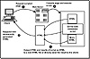

|
|
 |

|
Developing Java Enterprise Applications
by Stephen Asbury ; Scott R. Weiner
Wiley Computer Publishing, John Wiley & Sons, Inc.
ISBN: 0471327565 Pub Date: 02/01/99

|
CHAPTER 9
What Is Server-Side Scripting?
Server-side scripting is a technique by which program code is embedded in HTML documents and then parsed by a Web server. This technique enables more flexibility in the layout of HTML documents during Web application development. Sun provides a form of server-side scripting called JavaServer Pages (JSP). JSP features special HTML pages that include embedded Java code. This code is interpreted on the server and the results, instead of the original Web page, are sent to the client. JavaServer Pages are a type of server-side scripting.
This chapter provides an overview of the JSP technology and compares it to similar technologies available on other platforms. Chapter 10, “Creating JavaServer Pages,” shows how to take advantage of JSP in your applications.
Web-Based Application Structure
Most Web server vendors have recognized the need to provide more separation between the presentation of the Web page (primarily HTML) and the business logic used to dynamically update the page. For example, consider a company benefits system on the Web. This system allows users to type their Social Security numbers and passwords into a standard HTML form and see their 401k status in a dynamically generated table, shown in Figure 9.1. Based on what you have learned so far, you have a few choices for implementing this system:
- • CGI. Using CGI, you could write an application that handles an HTML form request. This requires a graphics person to lay out the HTML form, then a programmer to write the CGI script separately. If the layout of the table returned from the CGI script needs to be modified, most of the work will be done to the CGI script rather than the HTML.
- • Server plugin. Using the API of the specific server, a library of code is created that can be added to the server to handle specific requests. Unlike CGI, which is based on a published standard, this solution would work only with servers for which the plugin was created. Again, if the dynamic HTML returned from the plugin needed improvement, most of the work would be done in your C, Java, Visual Basic, or other programming code, not directly in an HTML document.
- • Applet. An applet that contains the form could be created. The applet could connect to a server process or directly to the database and return the results. This puts most of the layout burden on the developer and may have significant security considerations such as interaction through a firewall.
- • Servlet. Instead of CGI or a server plugin, you could use the servlet API discussed in Chapter 7, “Programming Servlets,” to dynamically create the Web page. However, as with CGI, changing the HTML for a servlet is a programming process, not really a page design process.
Consider the CGI example. You might create a CGI script that sits on the server and waits for requests from the HTML form. When the Web client sends a request, the CGI script can process the form, access the database, and then output HTML back to the client. This would require the creation of a script that generates HTML based on dynamic content. As the developer of the script, you would be responsible for the visual appearance of the data on the page because the HTML would have to be “hard coded” in the CGI script. It’s not reasonable to expect a graphic layout person to learn how to write CGI scripts, so what choice do you have? This means that an expensive engineering resource must be utilized to change the font in a table. If this sounds unreasonable to you, you’re not alone. This is why server-side scripting was created.
Figure 9.1 Example benefits page.
Server-Side Scripting
The idea behind server-side scripting is that rather than embedding the presentation code (HTML, in this case) inside the application (the CGI script, in this case), it would be better if the business logic could simply be referred to from the presentation. In other words, graphics layout experts could put together a complex HTML page that included a table. They would have server-side scripting tools that allowed them to simply specify what values need to be displayed in the table at specific locations in the Web page. These tools would refer to more complex developer-created business rules that actually did the work of processing the form, accessing data sources, logging the transaction, and returning values. The graphics layout experts simply use special tags to identify placeholders for values in their Web page. When this special HTML page is requested, the server executes the business logic created by the developer and inserts the values dynamically in the HTML template created by the graphics layout people. This allows the font, color, alignment, and so on to be changed without the need to have the developer recompile or modify the code. The developer can focus on business processes while the graphics people focus on presenting the results. Figure 9.2 shows the server-side scripting model.
There are several solutions for server-side scripting. The most common are as follows:
- • Active Server Pages (ASP) from Microsoft
- • Server-side JavaScript (previously referred to as LiveWire) from Netscape Communications
- • JavaServer pages from Sun Microsystems
All of these solutions have some common properties:
- Access to resources. Usually, these scripting languages provide some mechanism for accessing resources on the server, such as files, databases, and JavaBeans.
- Compilation. The special HTML pages are usually compiled so that they are more efficient when called several times by a user. This is a great improvement over a CGI script written in PERL, for example, which must be interpreted every time it is called.
- Programming language. Usually, these scripts are written in one specific language because servers generally know how to process only one kind of script based on the file extension. The language could be Java, Visual Basic, JavaScript, and so on.
- Special HTML pages. Most of the solutions require an HTML page in which these scripts are embedded. The pages usually have different file extensions such as .js or .asp rather than .htm or .html. This is how the server knows that these files require special processing when a client requests them.

Figure 9.2 A typical server-side scripting model.
Most server-side scripting solutions aim to fill the gap between layout features of HTML and more powerful programming languages required in enterprise applications. Each of the server-side scripting solutions described previously has benefits and weaknesses. This section looks at each with the perspective of what an enterprise developer will want to consider, such as programming language integration and cross-platform development capabilities.
|


){kind=link}
){kind=link}
){kind=link}
){kind=link}